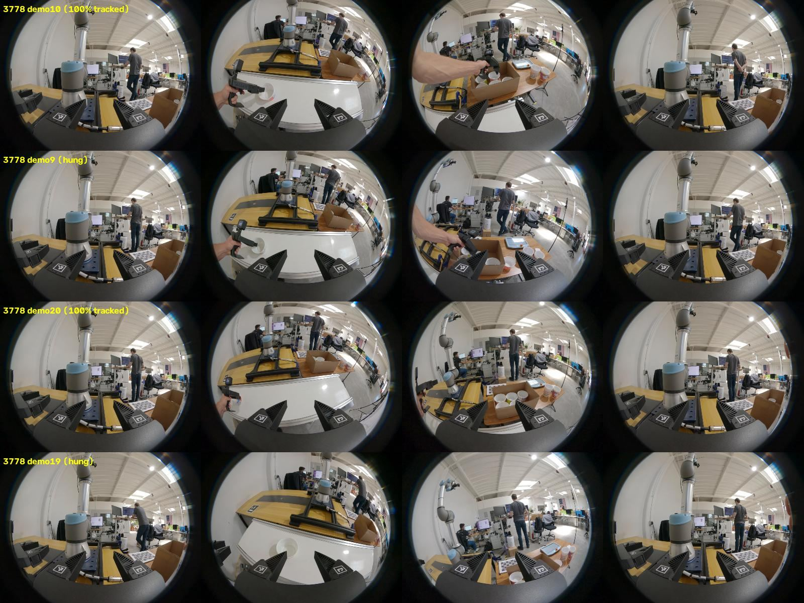
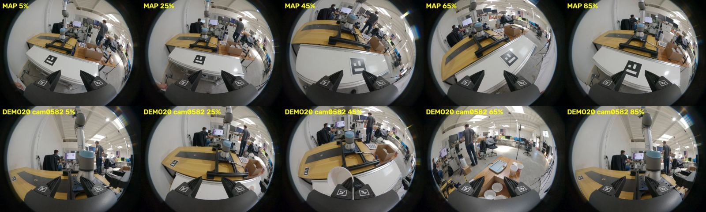
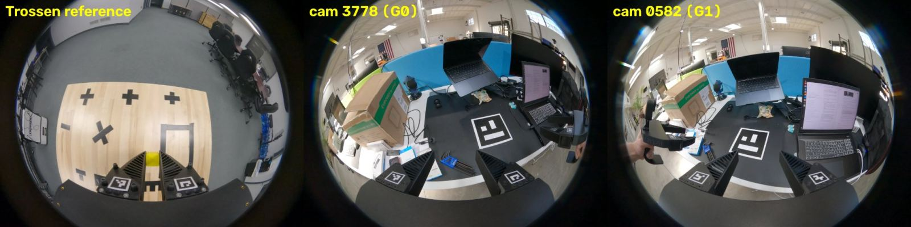

We took two Trossen TRumi handheld grippers from box to processed dataset, then tried them on a conveyor-belt pick-and-place at four belt speeds. The pipeline works on a static tabletop. On the conveyor, visual SLAM lost the camera pose in almost every demo, and the cause is not yet isolated.
Every clip tracked on every frame. The one deliberate off-map start was dropped, as it should be. The deliberately jerky demo was kept: nothing in the pipeline flags it.
28 of 40 camera clips never produced a trajectory, and most of the rest tracked 14–32% of frames. Belt speed made no visible difference. Two clips tracked perfectly, every time we ran them.
Each cell is one camera clip, localized against the second map (89.7 s, 96 keyframes, 98% of the mapping video tracked). The number is the share of SLAM frames with a pose.
| Attempt | Map | Setting | Result |
|---|---|---|---|
| Map 1 | 70.5 s · 65 KF | Default pipeline | Demos start off-map for 3–5 s, so the default limit would drop them. Four clips tested with the limit off: two tracked 15–19% and two timed out. |
| Map 2 (re-recorded) | 89.7 s · 96 KF | Lost-frame limit off, new trim option, 60× timeout | Jobs hung after relocalizing and sat idle until the timeout (load average 0.2). |
| Map 2, short timeout | same | 8× timeout | 12 of 40 clips produced a trajectory: 2 at 100%, 10 at 14–32%. The grid above. |
| Test 1: start on map | same | 8 clips trimmed to their first map recognition | 8 of 8 hung. |
| Repeatability | same | 2 perfect clips rerun ×2 | 100% both times. |
Dataset output: 3 episodes of gripper 0 only (1.8 s, 14.0 s and 12.4 s long; 2.4 GB). Gripper 0 stays open throughout (81–83 mm) because the other hand did the grasping. These episodes are a salvage, not usable bimanual data.


| Check | Result | Trossen example |
|---|---|---|
| Mapping video tracked | 95% | 98% |
| Gripper range, G0 / G1 | 42.0–124.2 / 42.0–123.6 mm | 66.9–123.6 mm |
| Finger tags seen | 99–100% | 63–100% |
| Lost frames per kept demo | 0 | 0 |
| Pose jumps > 3 cm, normal demos | 3–12% | 0.2–0.6% |
| Pose jumps > 3 cm, fast/jerky demo | 18–21% | – |
| Episodes | 9 of 10 · 18 GB MCAP | 2 of 2 |
| Processing time | 22 min | 7 min |

gopro_slam.cc.| Problem | Fix |
|---|---|
| Settings QR code wouldn't scan | Both cameras shipped on stock firmware (H24.01.02.10.00). Installed Labs 2.10.70 through the laptop's SD slot. The GoPro's USB file access is read/delete only. |
| Old QR image hard to read on screen | Regenerated as a sharp 33×33 code from the same command string, with a full-screen view. Scan with the Lens Mod off. |
| Pipeline couldn't reach Docker | A group membership predated the login session. process_session.sh re-executes under sg docker. A reboot fixed it permanently. |
check_clip.py reported false FAILs with two grippers | It now works out which gripper each camera belongs to and grades only that pair. |
| Smoke-test clips left on the cards | Excluded by hand. They would have been taken as the gripper calibrations. |
| Demos started off-map | New --trim_untracked_ends in step 06 (TRIM=1). It works as designed, but most clips failed later anyway. |
| SLAM hangs held the run for an hour | Configurable timeout (TIMEOUT_MULT). Hung clips are cut off in about 2 minutes. |
~/trumi_sessions/. 68 GoPro clips, verified against both cards by serial and byte size.test-plan/index.html in the repo